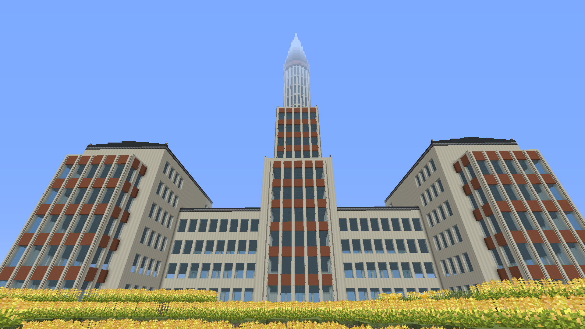

Высотка
Недалеко от дач находится самое высокое здание Томатомайна - высотка, задуманная как отель и офисное здание. На данный момент проект заморожен из-за нехватки рабочих и ряда других проблем.

Вид на недостроенное здание
Вернуться на главную страницу